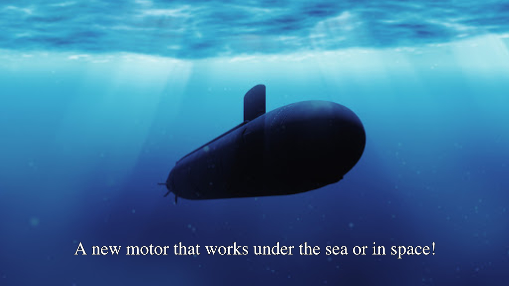
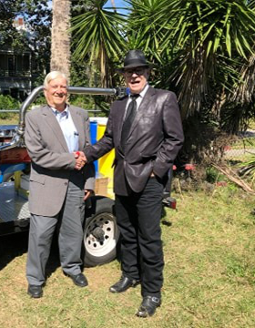
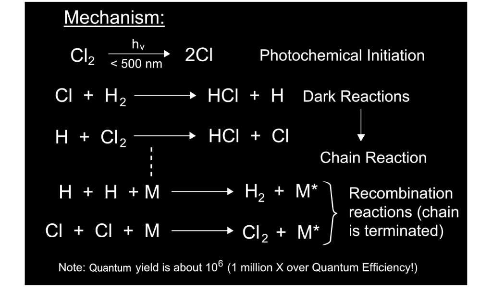
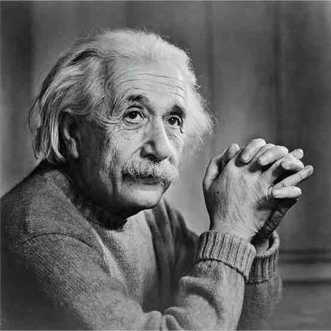
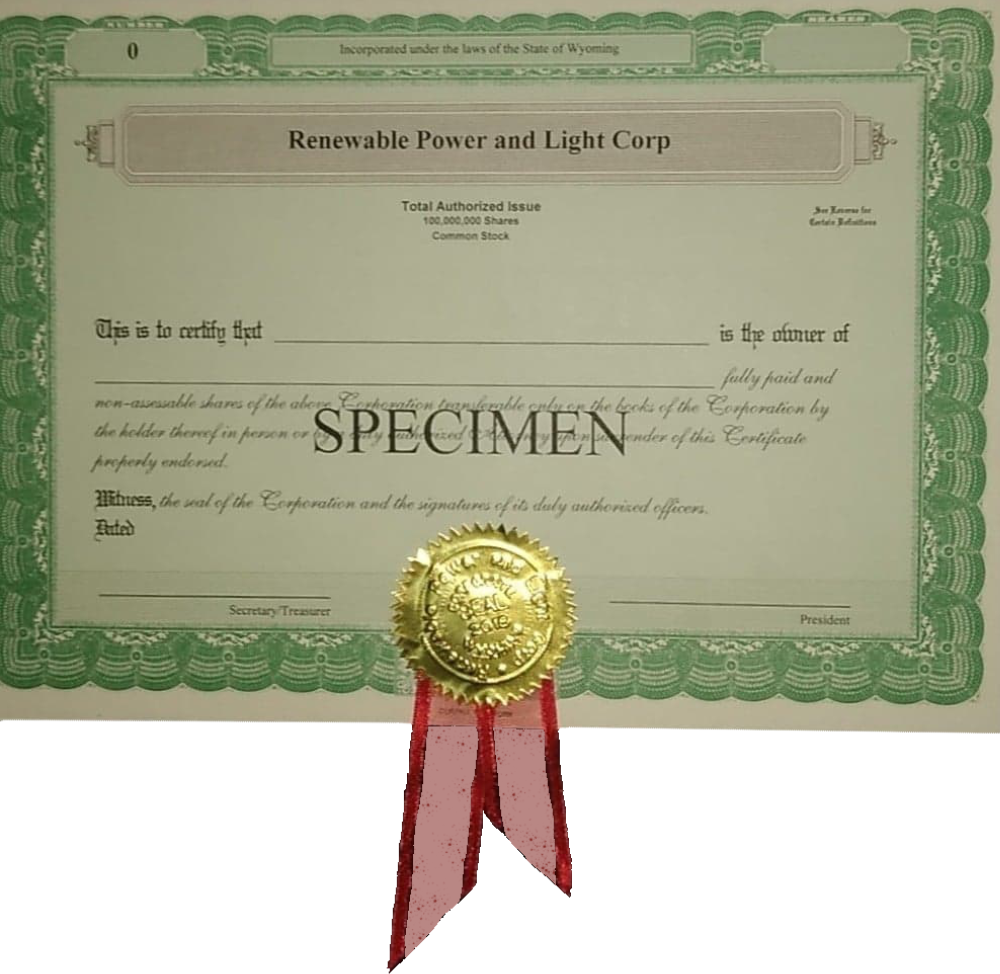
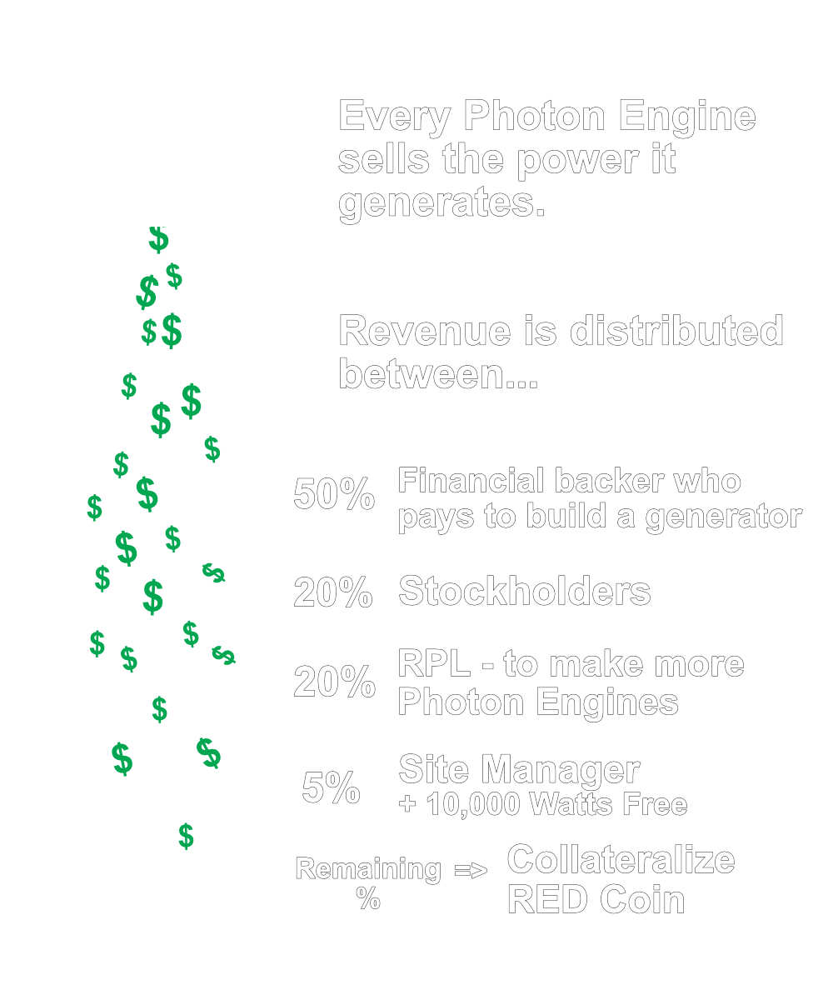
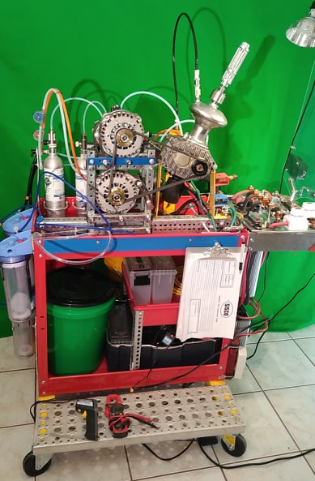
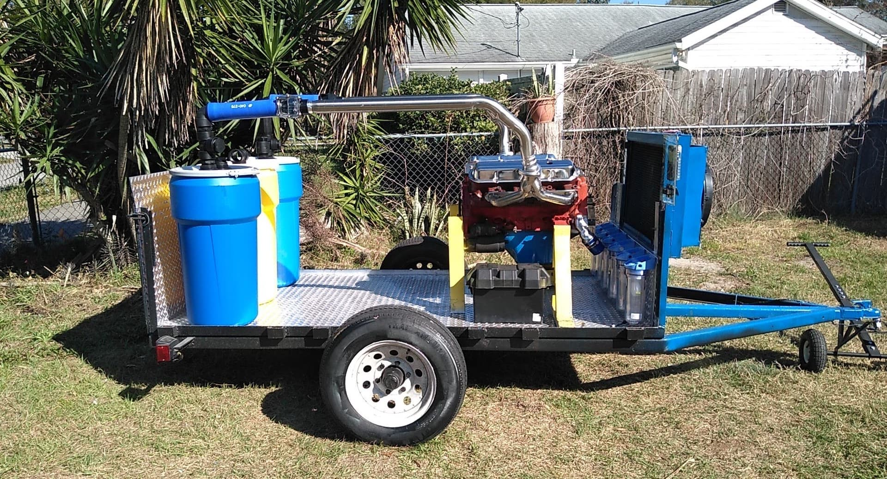
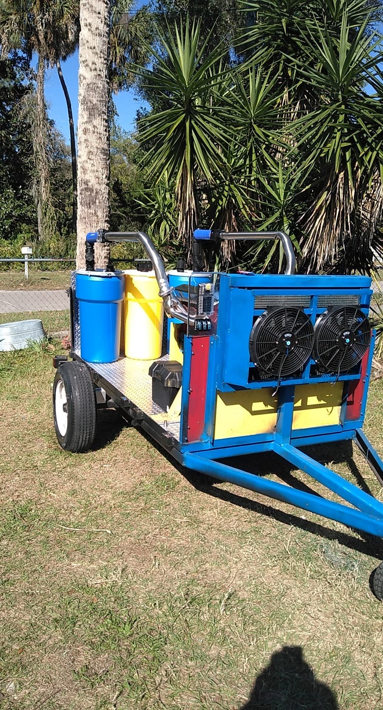

Scroll Down
presents...
A World Breakthrough Technology...

The PHOTON ENGINE
An Engine with no Air Intake!
In 1991, David Wenbert with Oneirus Aerospace helped Michael Patrick Moses (B.S. in Physics at Purdue University) do his thesis for his Masters of Science in Space Sciences at Florida Institute of Technology by building a working photochemical rocket engine for Nasa. On the team with Robert Scragg was David Wenbert and Dr. David Flinchbaugh who are now part of Dave Parker's Photon Engine consultation team!
The process begins with
ELECTROLYSIS
The Photon Engine runs on a precise mixture of Chlorine and Hydrogen gas. To obtain these gasses, we can electrolyze either...
Salt Water
Sodium Chloride
NaCl + H20
- OR -
Hydrochloric Acid
Hydrogen + Chlorine
HCL
1. ELECTROLYZING
SALT WATER
Using a wet cell, filled with salt water and a voltage applied across the terminals...
The gasses are captured and stored separately in a small vessel.
2. ELECTROLYZING HYDROCHLORIC ACID
Using a dry cell, filled with hydrochloric acid and a voltage applied across the terminals...

Similarly, the gasses are captured and stored separately in a small vessel.
Anhydrous Gasses
The fuel mixture must be rid of water before it can be injected into the combustion chamber. We accomplish this by passing the gas through a series of dryers.

THE PHOTON ENGINE
IS NOT FIRED BY SPARK PLUG,
IT IS FIRED BY LIGHT!
The Photon Engine is a closed loop system using "fuel rails". When the fuel rails pressure is too low, the power electrolyzes Hydrogen and Chlorine gas from the Hydrochloric acid. When the fuel rail pressure is too high, the pressure is vented off to the regenerative (reversible) cell, Hydrogen in one port, and Chlorine in the other, creating a large amount of electricity and turns it back into Hydrochloric acid.
There are no tanks of gasses. It is all "on-demand" !
REVERSIBLE CELL
The Electrolytic Cell (previously shown) uses HCl with voltage added to the electrodes to make H2 and Cl2 out. However, turned around backwards, the Galvanic Cell (below), with no added power uses surplus fuel and makes both HCL and power out!

THE BREAKTHROUGH PHOTON ENGINE REVERSIBLE CELL...

The "Powered" Negative Electrolytic Cathode and Positive Electrolytic Anode becomes a "Non-Powered" Positive Galvanic Cathode and a Negative Galvanic Electrode producing large amounts electricity!
Robert Scragg
Original Patent Holder
In the late 70's, Scragg read about the powerful reaction between Chlorine and light. He decided to make an engine to harness the power...

Dave Parker
Inventor
Parker made 6 patented modifications to the Scragg model, effectively solving all of its shortcomings and doubling it's output power.

Dr. David Flinchbaugh
Inventor, Professor
Dr. Flinchbough documented the demonstration of this tech by the Robert Scragg team 40 years ago. He is now head of the Technical Review Team for the New Patent Pending Improvements including Demonstration of Independent Closed Loop Power Generation
Dr. Flinchbaugh is an inventor and professor. He specializes in intellectual property. He has taught as an adjunct professor at numerous colleges and universities and participated in forming 18 corporations.
Work History
In 1956, Dr. Flinchbaugh was hired by IBM to conduct experiments, design transistors and write a visual indicator patent application for their future computers. He has held research and engineering positions at IBM, Sperry, Lockheed-Martin, Westinghouse, United Aircraft, McDonnell Douglas, Andersen Laboratories, Argonne National Laboratories and a PRC contractor at NASA headquarters, Kennedy Space Center.
Published Works
Dr. Flinchbaugh has over 240 inventions, 12 issued U.S. patents. He has published over 110 technical papers, chapters and/or six books; Invited speaker at domestic and foreign institutions. He has composed and copyrighted eight hymns, anthems and songs with lyrics.
Career Accomplishments
Before creating the Urocycler, Dr. Flinchbaugh designed and built Argon-ion and other gas and solid-state types of laser systems for use in ophthalmology and surgery. His first laser design was a Cesium-Ion LASER in 1960. He devised the Remotely Operated Service Arm (ROSA) in 1980, an anthropomorphic robot manipulator used to help reduce human risk to high levels of radiation while servicing and refueling nuclear power reactors. In addition, he is an accomplished musician.
Bio Info courtesy of Strathmore's Who's Who Worldwide
Dr. Flinchbaugh's recent meeting with Dave Parker
March 2020, Florida
Dr. Flinchbaugh is a Laser engineer and pioneer, as well as a nuclear engineer. He witnessed this Photochemical Chain reaction take place currently with David Parker as well as Robert Scragg 40 years ago, as well as with a special team at NASA in the 90's. He is the first to say how Dave Parker made the tech viable by bringing in the elimination of acid in the motor or turbine and the elimination of toxins by sealing the intake and exhaust. The Doctor agreed to write an Academic paper together with Dave Parker about the 120 year suppression of non nuclear chain reactions and the implications it has for free source energy!
A WORLD BREAKTHROUGH IN CHEMICAL PROCESSING
The Photon Engine offers a detonation with proven Over-Unity power. An "added value" gift from 10 to the 6th power zero-order chain reaction is the chemical creation of abundant free fuel!

Universities around the world
have documented this Over-Unity
Photochemical Chain Reaction!
Unity means One or 100%. However, this photochemical chain reaction
has a "Quantum Yield that starts with One" and has around a MILLION out!

POWER
For the People, By the People!
We can power America with Photon Engine micro grids!

The Photon Engine runs at 3,000 HP can produce over
2 megawatts which
would mean that 320,000 Photon Engines could power the USA with a
"Decentralized Grid"!
Demonstrated by Universities
Harvard Natural Sciences
Harvard Natural Sciences Lecture Demonstrations
University of Minnesota
Professor of Chemistry - Christopher J. Cramer
Royal Society of Chemistry
Professor Peter Wothers
Suppressed Technology
The photochemical reaction of Hydrogen and Chlorine is a non-radioactive power source, second in power only to nuclear. The power source was suppressed at the beginning of the 19th century when Rockefeller and Standard Oil took financial control of chemistry through the Petro-Chemical monopoly of both Big Oil and Big Pharma.
In 1934, Nernst invented the word "Quantum" for the reaction because it was documented to be "One In and up to a Million Out!"

Walther Nernst - 1889
In 1918, Walther Nernst proposed that the photochemical reaction between hydrogen and chlorine is a chain reaction in order to explain what's known as the quantum yield phenomena. This means that one photon of light is responsible for the formation of as many as 1 million molecules of the product HCl. Nernst suggested that the photon dissociates a Cl2 molecule into two Cl atoms which each initiate a long chain of reaction steps forming HCl.
- Laidler K.J., Chemical Kinetics (3rd ed., Harper & Row 1987) p.288-290 ISBN 0-06-043862-2
Thus, Free Energy was documented to be very very real.
It was suppressed again, however, by the Manhattan Project during the development of the nuclear bomb as George Kistiakowsky was in charge of examining all explosions at the time. Later Kistiakowsky, traveled to Florida and met with Robert Scragg and told him that the Acedemic suppression of the Photochemical Reaction between Hydrogen and Chlorine was no longer being covered up by the government and that all the scientists were hopeful for Scragg in its development and marketing.
George Kistiakowsy
He earned his Chemistry Credentials directly under Max Bodenstein. He was in charge of explosive testing and evaluation for the Manhattan Project, which suppressed this reaction in the academic world only to later travel to meet with Scragg in person and tell him that the explosion was no longer being suppressed.

Max Bodenstein.
German physical chemist (1871–1942). First scientist to propose chemical chain reactions.
"The term NON-NUCLEAR CHAIN REACTIONS has been completely concealed from public awareness for 120 years! But we are changing that..."
- David Parker, Invetor
Chain Reaction
"The laws of Thermodynamics as well as the laws of photochemistry only apply to the first reaction. A chain reaction gives free energy for every reaction beyond the primary one."
Albert Einstein
The H2-CL2 Photochemical reaction has been shown around the world to be 1 Million reactions for free.
HP White Laboratory

"The Hydrogen-Chlorine Photochemical Reaction is 14 X more powerful than Gasoline and Second in power to Nuclear. Only this Photochmical Chain Reaction is Non Nuclear and Radiation Free."
More Energetic Than Gasoline
How much energy can one expect to obtain by exploding hydrogen instead of gasoline? On an equal weight basis the normal hydrogen explosion produces approximately three times as much energy as gasoline. What does the new hydrogen process (involving hydrogen, chlorine and radiation) produce? Based on numerous recent careful tests made by two independent laboratories (one was H.P. White Laboratory, Belair, MD) the new process produces almost five times more kinetic (motion) energy than the explosion of hydrogen with oxygen. On the basis of an equal weight of fuel, the new hydrogen process produces 14 times more kinetic energy than gasoline. This is the highest energy output of any known process (other than nuclear reactions such as fusion or fission).
How Tests Were Made
A series of precise side-by-side experiments were carefully carried out to determine the kinetic energies resulting when a projectile (wooden ball) was given a high impulse thrust out of a mortar using controlled explosions of hydrogen. Hydrogen-Oxygen-arc radiation produced a normal explosion which propelled the wooden ball with predictable kinetic energy. A side-by-side test using hydrogen-chlorine-arc radiation, identical in every way except for the substitution of oxygen, gave an impressive result: almost five times greater kinetic energy was obtained using hydrogen-chlorine-arc. The energies were determined from precise velocity measurements using standard ballistics techniques and electrical equipment.
Significance Of Findings
(1) Virtually unlimited energy can be obtained by proper utilization of the process. Since hydrogen and chlorine are readily available from sea water, there is no shortage of fuel and oxidant.
(2) Since the product of the explosion is primarily hydrochloric acid, the hydrogen and chlorine needed for the second cycle can be obtained from the product, using known or improved electrolysis technology. In other words, the fuel can be recycled.
Future Possibilities
(1) Since the yield of kinetic energy is extremely high, very efficient lightweight kinetic engines can be used with this process. Thus the process can be applied to internal combustion engines, rotary engines, rockets, and gas turbines.
(2) Since plasma (mister of ions and electrons) is produced in the explosion, the process can be used to obtain byproduct electrical current (for example, using a magnetohydrodynamic generator).
(3) Since the kinetic energy is extremely high, electricity can be generated on a small scale (50 kilowatts) as well as on a large scale (1,000 megawatts).
TRIBUNE
“Fantasy Or Real: Cars, Planes That Run On Light?”
- Tribune, 7/1/1979
UPI~Ships, locomotives and airlines that carry no fuel. An automobile uses only a small supply of hydrochloric acid as a power medium -- over and over again. A power plant generates electricity without consuming coal, petroleum or uranium.
Fantasy or real possibilities?
A Miami engineering firm has several small internal combustion engines already being run in this manner on ultraviolet light without requiring any real fuel.
A California engineer says he is preparing to use an ultraviolet laser to extract hydrogen from water continually to power an automobile.
No firm answer can yet be given to the question of whether either process is the key to solving the world’s energy problems. But the leading article in the may Scientific American by Prof. Avigdor N. Ronn of Brooklyn College, entitled “Laser Chemistry”, makes it clear that chemists around the world are working busily trying to use the energy of light as opposed to heat, the source of all energy up to now.
If it turns out as chemists are starting to believe, that light can trigger controlled chemical reactions to produce enormously more energy than any thermal reaction from fossil fuel, then man indeed could be on the threshold of a truly unlimited source of energy. We could stop coal or petroleum for fuel and reserve it all for chemical feedstocks, particularly for fertilizer chemicals to produce food.
The bitter issue over nuclear power would subside for nuclear power simply no longer would be needed. Uranium, henceforth, would be useful only for making weapons.
The supply of light in nature is unlimited, and artificial light in the small amounts needed to set off chemical reactions to produce large amounts of energy can be obtained easily and cheaply from an ordinary automobile generator and storage battery.
The Miami firm that is running small engines on ultraviolet light is Solar Reactor Corp., headed by Robin Parker. It is working on a reaction discovered partly by accident by Robert Scragg, an inventor. Scragg learned that ultraviolet light can set off a reaction between hydrogen and chlorine producing many times as much mechanical energy in a small engine as gasoline or diesel fuel.
Further, the reaction can be produced in a closed loop with the small amount of hydrochloric acid used over and over agin like the vapor medium in a Rankine cycle steam engine.
The actual energy used in the reaction comes from small ultraviolet light plugs made for Solar Reactor by Champion Spark Plug Co.
It looks like the nearest thing to perpetual motion yet achieved although it isn’t really that. Parker and Scragg have not yet built the closed loop but they say it can be built out of off-the-shelf hardware available from several chemical equipment manufacturers.
So far they have operated a Honda 4-cycle motorcycle engine, two small Tecumseh appliance engines, and a tiny turbine engine they built themselves by the method.
Scragg made his discovery after realizing that all solar energy research up to now has been concerned with thermal energy, or the infrared end of the electromagnetic spectrum, whereas light contains more energy. It is light, not heat, that makes plants grow. Light has the energy to move itself at a speed of 186,000 miles a second. This led him to think about the laser, a device for utilizing light energy invented some 20 years ago. But the laser is a very expensive device and has never lived up to original expectations. [This was written in 1979]
Then one day he ran across a report published in the 1920s by a graduate student saying that, in the presence of ordinary ultraviolet light, hydrogen and chlorine react with extreme violence to produce vast amounts of energy. Scragg was staggered.
Scragg experimented successfully, then sought backers. Hydrochloric acid is easily made from seawater, is easily broken down into hydrogen and chlorine, and easily put back together. It takes as much energy to extract it from water as the energy it contains, but what difference does that make if you can use it over and over again more or less indefinitely?
Brooklyn College’s Dr. Ronn said he knows Scragg and has discussed his discovery with him. Ronn said it may have all the potential Scragg believes, but it will take a lot of time and money to prove it.
The closed loop is essential to prolonged operation of the light engine, not only to avoid consuming the hydrogen and chlorine but to prevent an exhaust. An exhaust from such an engine would be quite toxic and corrosive.
Scragg and Parker estimate that an automobile powered by a light engine would carry one to three gallons of hydrochloric acid in its closed loop system. The acid would pass through a converter to be broken down into hydrogen and chlorine and the separate gases then would be fed into the engine’s cylinders and would react together as the ultraviolet plugs emitted light, creating an expansion to drive the pistons. Acceleration and deceleration would be controlled by a rheostat varying the timing of the light plugs, not by varying the flow of the gases.
Even though the reaction is induced by light instead of heat, the temperature in the center of the cylinder reaches 1,000 degrees Fahrenheit. The thermal energy thus created without combustion is at least four times that of a gasoline engine and the mechanical energy appears to be up to 14 times as high as a gasoline engine of the same size.
At 1,000 F., gaseous Hydrogen Chloride is not corrosive to metals, but as the gas leaves the cylinder it goes through a scrubber to return it to liquid hydrochloric acid to renew the cycle.
Scragg and Parker concede that they do not fully understand what happens inside one of their engines when they are running, and that the action appears to violate some of the accepted laws of thermodynamics. That is one reason so much work must be done.
Dave Parker began studying imperfections and making improvements to Scragg's work until he perfected the process, making it safe and non toxic. He now holds the current Patent Pending on these improvements which make the tech finally useable some 40 years later!
Space Travel
IN ACTUALITY, ONE OF THE BIGGEST CHALLENGES TO SPACE TRAVEL IS SIMPLY HAULING AND OBTAINING FUEL. HOWEVER, THE PHOTON REACTOR MAKES ITS OWN FUEL!

The Wenbert Team, now working with RP&L, determined the Cl2/H2 [+hv] reaction to represent a Specific Impulse of 1816 seconds in unoptimized systems. This compares to 456 seconds for LOX/H2 in the Space Shuttle Main Engine.
In reality, a well designed photokinetic rocket engine delivers an even higher Isp. For one thing, the reaction kinetics are proportional (but not linear) to the input energy, so increasing input energy results in even larger increases in kinetic output, which would be reflected in Isp. But being 3-4x times more efficient than Oxygen based systems doesn't tell the whole story, because the less propellant you need (to push). So the practical result is that in the same sized vehicle (i.e. SpaceX Starship), a Photon Engine could reduce the transit time from Earth to Mars from months to days!
A DECENTRALIZED GRID IS THE FUTURE!
We must end war over oil and environmental destruction! RPL offers four solutions...
Plan A
Power is sold up the grid. An investor keeps 50% for financing the build of the generator. The Home Owner or Site Manager gets up to 10 kw for free and a small percentage of sales. RP& L gets 40% to go to stockholders.
Plan B
A similar percentile split as Plan A only with a Micro-Grid (an off grid private grid).
Plan C
Power is sold similar to Plan A but customized percentages along with Licenses for specific areas.
Plan D
We are open to anyone and everyone who has ideas on how to help Decentralize the Grid!
A Photon Engine can easily power 200 homes! What an incredible business opportunity!
Stockholders
RENEWABLE POWER & LIGHT is a "C" corporation with an unlimited number of stockholders. The identity of stockholders is legally kept secret. "Monopolistic Restraint of Trade" is avoided by selling the "Golden Eggs," the Power, not the Goose that lays them (the I.P., the invention itself!)
REVENUE GENERATED FROM POWER SOLD IS USED FOR BUILDING GENERATORS, BUT A HIGH PERCENTAGE IS DISTRIBUTED TO STOCKHOLDERS AS REVENUE OR DIVIDENDS.
Of course, a Site Manager could finance their own build and get 55-60%
NO STOCK PURCHASE MONEY GOES TOWARD ADMINISTRATION OR MANAGEMENT OR "ANYTHING" OTHER THAN BUILDING GENERATORS WHICH GIVES YOU A PERCENTAGE IN THE SPLIT OF ALL POWER SOLD!
Comparing Fuel Sources
Gasoline
Sample text.
Dry Hydrogen
Hydrogen is 3.4X more explosive than gasoline
Hydrogen Chlorine
Hydrogen Chlorine reaction is 14X more powerful than gasoline
Photon Powered Turbine
No intake, no exhaust, AND will power an 8,400 Watt home! Actually makes more fuel than it uses. 14 X more powerful than gasoline!

An 8.4 KW Photon-Power Turbine with no intake and no exhaust, demonstrating for every one increment of energy "in" there is a radiation-free chain reaction with a million increments of energy "out"!
The Photon Engine
1 MegaWatt (1 Million Watts) Demo Unit
By converting the Cadillac 500 8.2L engine from a four stroke to a special new type of two stroke (it doesn't even have an intake), we've effectively doubled the power capabilty.

Additionally, our proprietary fuel mixture that is 14X more explosive than gasoline, allows the Photon Engine to deliver 2000 horsepower!

The reactant is not exhausted, but recycled into fuel again.

Pictured above is where we bolt in the generator head.
This Photon Engine will power 100 homes at 10,000 Watts per home, or 200 homes at 5,000 Watts per home.
A FAMOUS PERFORMANCE ENGINE MADE EVEN GREATER USING PHOTON POWER!
THE CADILLAC 500 WAS THE LARGEST PRODUCTION LINE ENGINE IN AMERICAN HISTORY!
Charles Nearburg, laid down a top land speed of 417.65 mph using this same engine!
BIG CAR AMERICA IS BACK!
Without the pollution or reliance on Big Oil
Cadillac was the first automobile maker in the world to mass-produce V8 engines. WE CAN EASILY DEVELOP 2,000 HP WITH THIS MOTOR TO POWER 200 HOMES OR YOU CAN SIMPLY DRIVE AROUND A BIG CAR WITH NO POLLUTION AND 14 X MORE POWER THAN GASOLINE!
The Land Speed Record was set using 1,900 HP. Our Photon Modified Cadillac motor can produce well over 2,000 HP!

. . . is introducing to the world, a technology with no emissions and 14X more power than Gasoline: NON-NUCLEAR CHAIN REACTIONS!